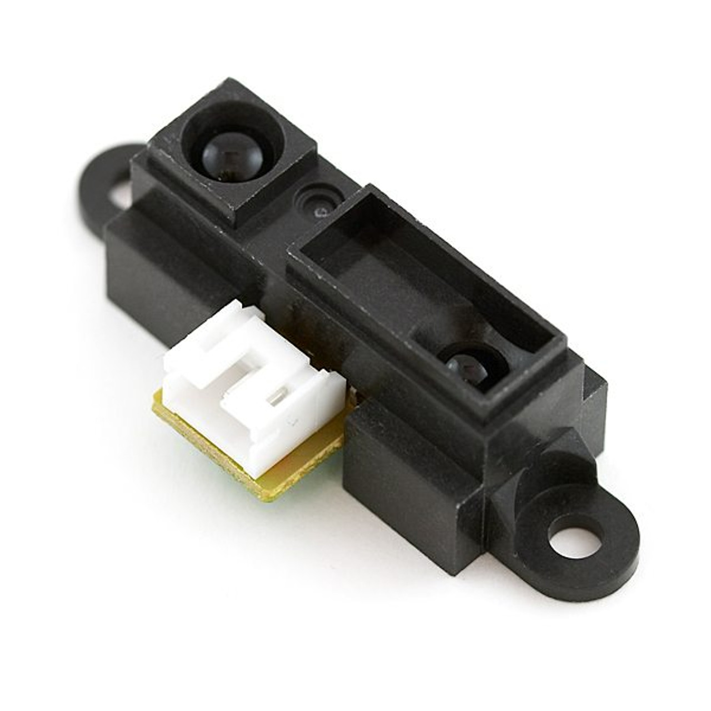

|
Romi Maze Solver
ME 405 Term Project
|
|

| |
|
Romi Maze Solver
ME 405 Term Project
|
|
|
| |
For this design project each team was provided with ROMI kits that were purchased from the Pololu Robotics and Electronics manufacturer and retailer. The ROMI kit was designed as an adaptable chassis for students to configure for executing various tasks in the context of the FRC (First Robotics Competition). Our ROMI was utilized as a platform to attach the provided boards (NUCLEO-L476RG and Shoe of Brian) and necessary sensors to complete the course.
In order to successfully traverse the course, we had to decide what sensors to incorporate into our design. Seen below, we added a Reflectance Array, Range Finder, and BNO055 in order to continously get all the sensory information recquired for our robot to navigate.
For our Reflectance Array, we chose to mount a Polulu-qtrmd 07a directly on the center of our robot. This array contains 7 analog reflectance sensors that allow us to detect values for the color underneath each sensor. This was extremely useful for the line following aspect of our design, as the middle three sensors were used to ensure the Romi was on the black line, and if any of the outer sensors detected black, it meant the Romi was off the line and had to turn in the appropiate direction.
Another use for the seven reflectance sensors was to detect the start and finish sections. When all seven of the sensors detected black, then white immediatley after, it meant the Romi entered the designated box, and would stop, turn around, and make its way back to where it started.

For our Range Finder, we attached a Polulu-GP2Y0A41SK0F to the back right of our robot. This sensor allowed us to read analog values relating the distance of an object to the sensor. We used this to determine when the Romi made its way past the obstacle and was ready to turn. When the romi first encounters the obstacle, it truns to face the Range Finder towards it, and moves until it no longer detects it. It then turns and repeats the process two more times until it is successfully on the other side of the object. Doing it this way allows our Romi to navigate around obstacles of many different sizes and ensures it navigates the course correctly.
Attached on our Romi is a BNO055 Sensor as seen above. The BNO055 contains many useful sensors, most notably a gyroscope, acceleromater, and magnometer. We used this in our design to allow the Romi to know its heading, angular velocity, and acceleration in order to make precise turns. This was used to make the Romi turn around and make its way back, as well as making the turns around the object in the way. It was also used to detect the object, when the angular velocity is zero and the heading hasnt changed in a few seconds, it means the Romi has encountered the object and will move on to the steps recquired to going around it.

Seen above is the final version of the course our Romi is recquired to complete. The Romi will be placed in the start section and wait for a user input to begin. Once it starts it will make its way through the course, around the object, and stop in the finish section. Once there, it will turn around and make its way back to the start.
The romi will continously be checking the Reflectance Array Sensors to determine if it needs to turn. When the object is encountered, it begins to check the Range Finder to determine the length of the object, and uses the BNO055 to get its current heading to make precise turns.